AranykapuZenekar
"Különleges hangzásvilágú interaktív koncert gyermekek számára - színvonalas kikapcsolódás a felnőtteknek"
Töreky Zsuzsi, Kiss Krisztián, Lőrincz Tamás
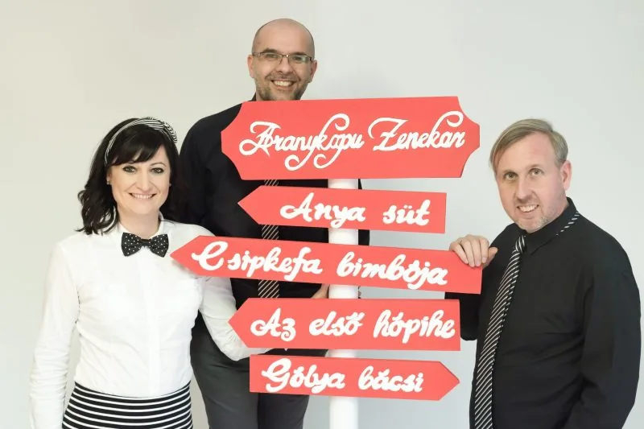
2013-ban alakult meg Aranykapu Gyermekzenekarunk. Az a célunk, hogy a magyar néphagyományból merítve, különleges hangzásvilággal, a korosztálynak (1-10 éves) megfelelően adjuk át zenei- és anyanyelvi értékeinket.
Az interaktív koncerteken zongora-, gitár, nagybőgő, harangjáték, cajon, udu és egyéb ritmushangszerek is kísérik a nép- és gyermekdalokat, mondókákat.
Az elmúlt években – a közönség inspirálta folyamat során – tudatosan szólunk évről évre az egyre idősebb korosztályokhoz. Eljutva így a kisgyermekektől a kisiskolásokon és az ifjakon keresztül a felnőttekig. Számos esetben adtuk elő irodalmi, ünnepi műsorainkat, illetve játsszuk Szerelem című koncertünket.
- Töreky Zsuzsiének
- Kiss Krisztián(dalszerző): zongora, gitár
- Lőrincz Tamásnagybőgő, udu, cajon, harangjáték, gitár
Eddig megjelentlemezeink
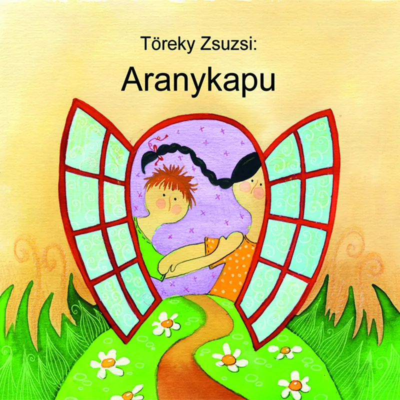
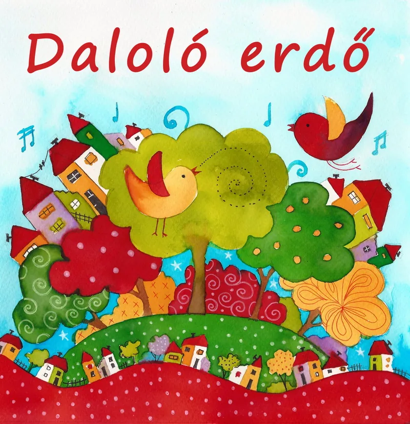
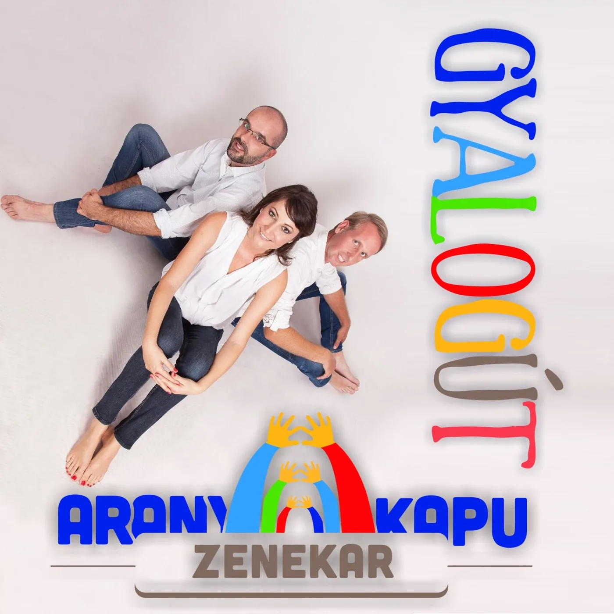
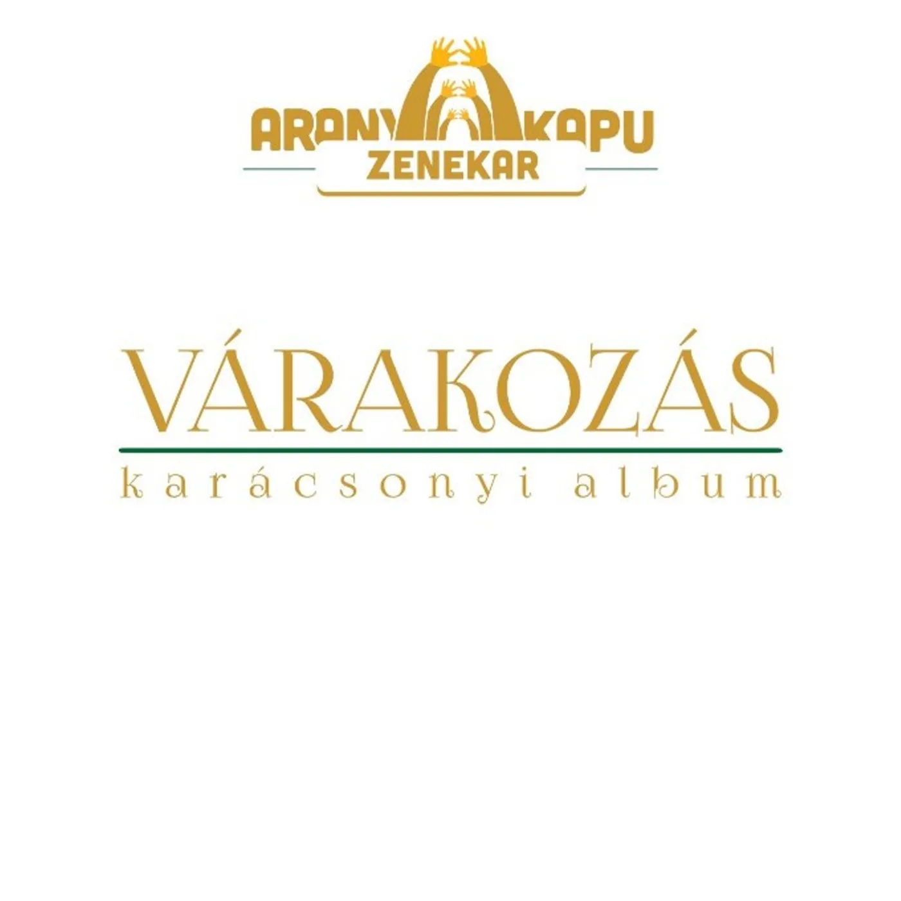
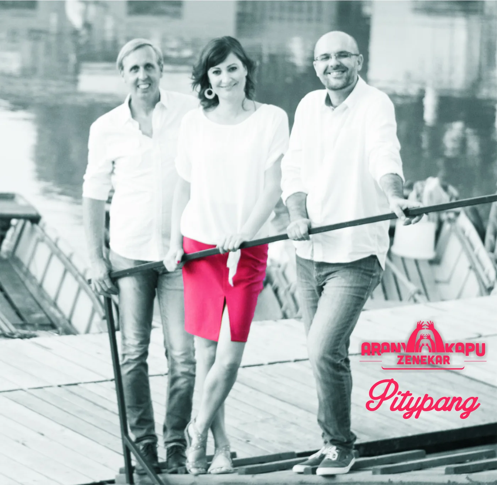
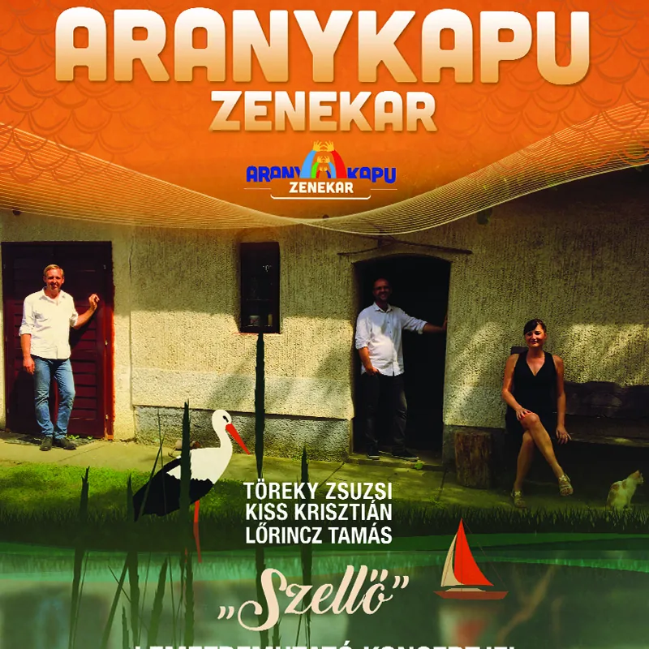
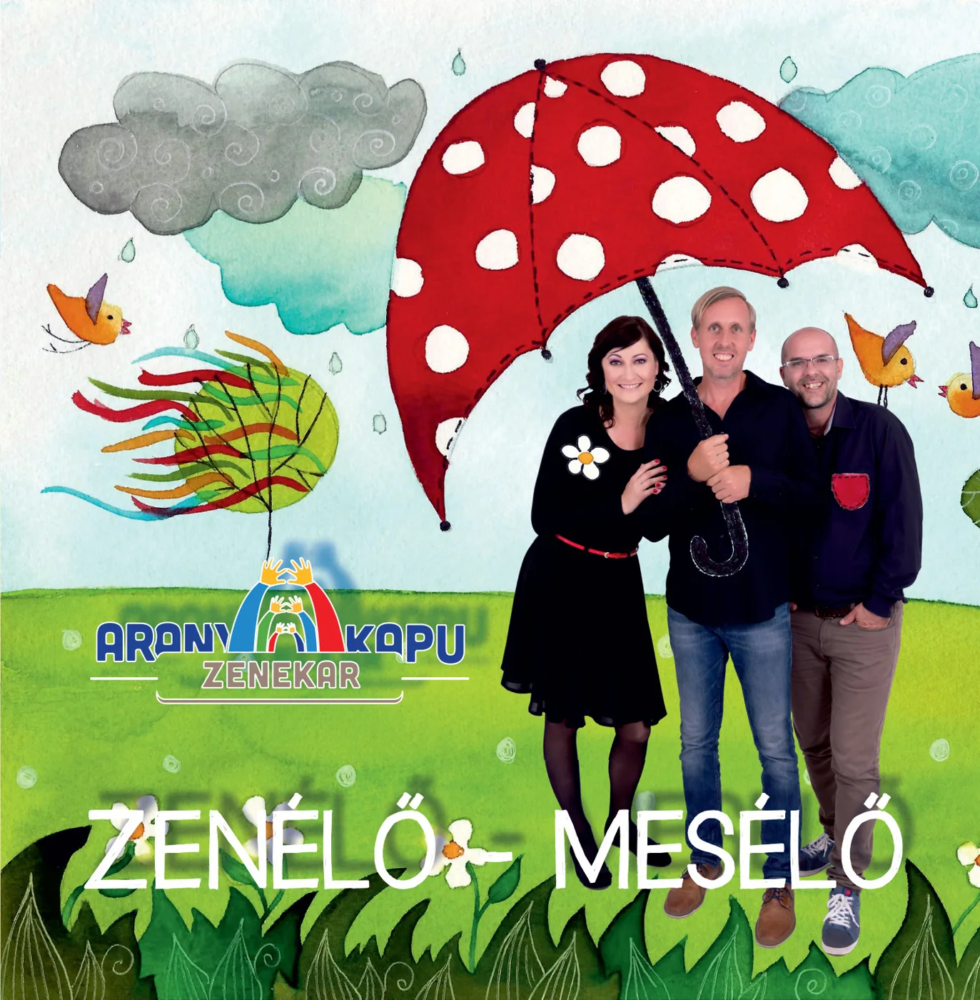
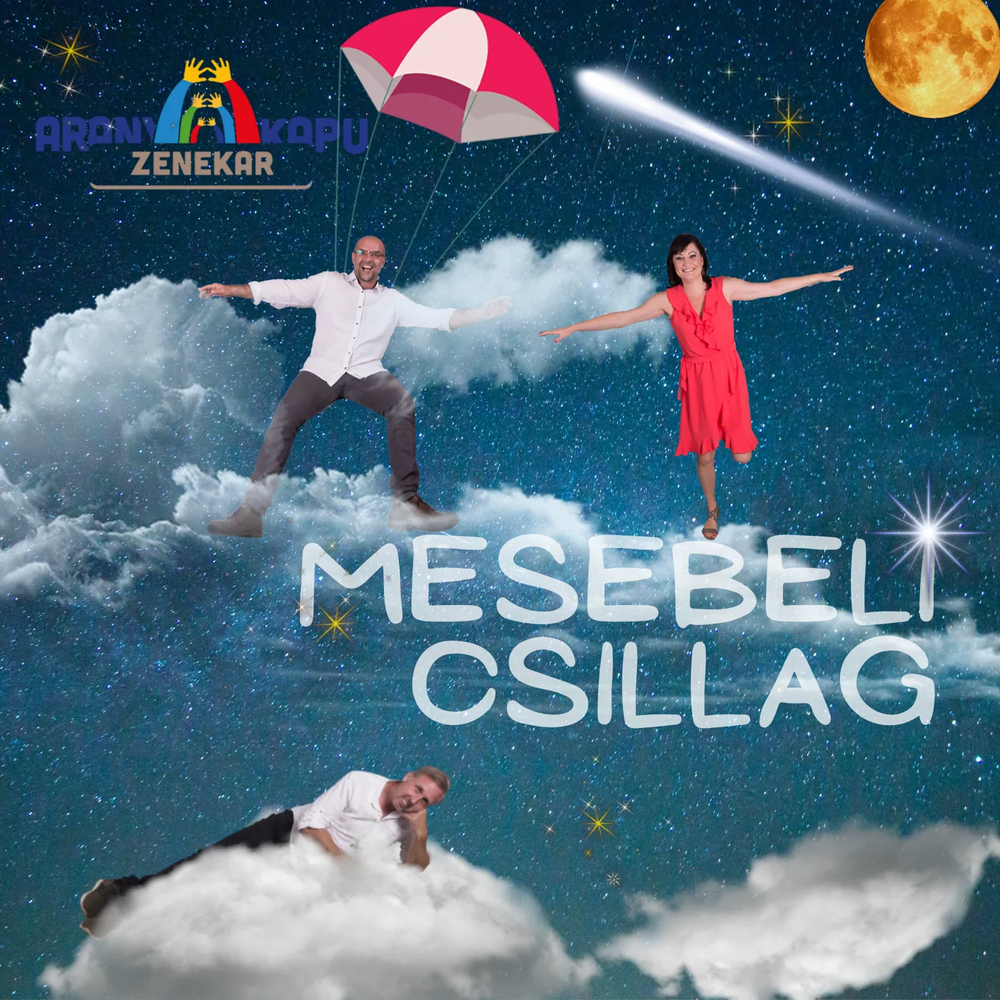
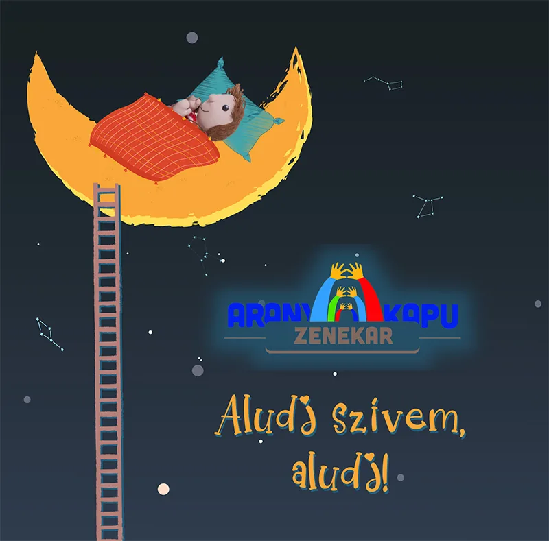
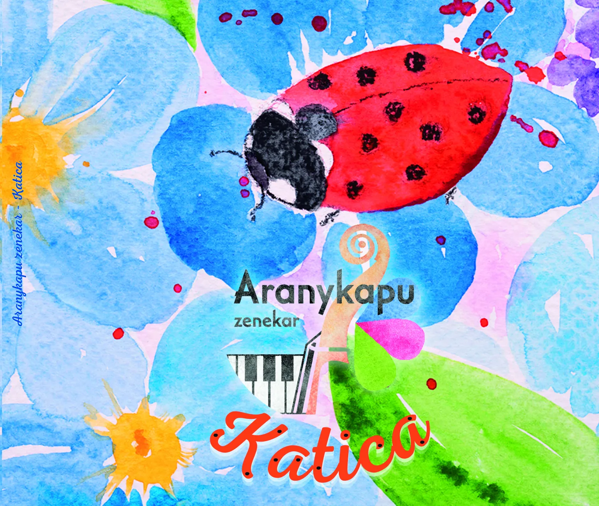